Primi passi
Per chi non ha mai corso o riparte da zero. Si alterna corsa e camminata.
Ritmooltre 6'45"/km

Club di corsa della comunità universitaria · gratis
Uscite di gruppo ogni settimana, per tutti i livelli. Mai corso prima? C'è un gruppo per te. Porta solo le scarpe.
Ogni settimana
Tre appuntamenti fissi. Si parte puntuali, si aspetta chi arriva dopo al primo semaforo.
| Giorno | Uscita | Ora | Ritrovo | Distanza |
|---|---|---|---|---|
| LUN | Corsa lentaSi chiacchiera mentre si corre. | [ORA] | [LUOGO] | [KM] km |
| MER | Ripetute in pistaRiscaldamento insieme, poi ognuno al suo ritmo. | [ORA] | [LUOGO] | [KM] km |
| DOM | Il lungoIl lungomare è la nostra pista. Poi caffè. | [ORA] | [LUOGO] | [KM] km |
Tre ritmi, un gruppo solo
A ogni uscita ci dividiamo per ritmo e ci ritroviamo all'arrivo. Puoi cambiare gruppo quando vuoi.
Per chi non ha mai corso o riparte da zero. Si alterna corsa e camminata.
Corri già un po' e vuoi farlo con regolarità, in compagnia.
Prepari una gara o vuoi spingere un po' di più, senza lasciare indietro nessuno.
Due passi alla volta
Un messaggio su Instagram o una mail. Dicci da quanto corri, anche se la risposta è "mai".
Scegli un'uscita del programma. Ti presentiamo al gruppo del tuo ritmo.
Si parte insieme, si arriva insieme. Alla prima uscita nessuno guarda il cronometro.
Si parte insieme, si arriva insieme.
Prima di venire
Niente. Le uscite sono gratis per tutti.
No. Il gruppo Primi passi esiste apposta, e a ogni uscita qualcuno corre con chi chiude il gruppo.
Studenti, dottorandi e personale della comunità universitaria. [DA CONFERMARE]
Si corre lo stesso, poi caffè. Se un'uscita salta lo scriviamo subito su Instagram.
Scarpe da corsa e una bottiglietta d'acqua. Per le borse, chiedi al ritrovo.
Ci iscriviamo insieme ad alcune corse in città durante l'anno. Le annunciamo sui social.
Ti aspettiamo al ritrovo
Scrivici per la prima uscita. Rispondiamo in giornata, di solito dopo la corsa.